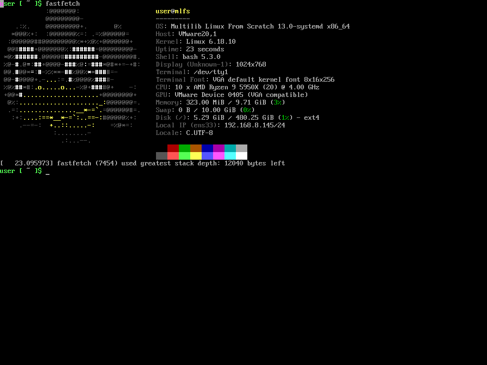

Linux From Scratch是纯手动编译安装的，并且没有包管理器的Linux系统。它的缺点也很明显：需要一个现成的Linux发行版，如果你没有Linux内核，那你也无从编译Linux。
fosslinux/live-bootstrap生成的系统，功能十分有限，编译和安装软件也缺少很多依赖，不像gentoo，不仅可以编译安装软件，也可以安装二进制软件。
LFS介于两者之间，经过书上的脚本测试，发现LFS-13.0所有软件都符合编译LFS的条件，除了内核版本过低。经过笔者的测试，MLFS-13.0可以在live-bootstrap的63b24502c7e5bad7db5ee1d2005db4cc5905ab74版本编译安装，但是LFS-12.0无法在该版本的live-bootstrap编译安装。
系统过于简陋带来的影响就在于，MLFS第8章的测试，成功率要低很多，但是系统依旧可以成功启动。
前提条件
- 完成live-bootstrap的编译。硬件上需要两块硬盘，虚拟机只需要编译完再新建一个SATA虚拟硬盘就可以了。SCSI虚拟硬盘stage0系统它读不出来（应该是内核问题）。
- 安装启动dropbear
- 根据笔者的这篇教程，使用LFS-12.0的交叉编译工具链，编译出linux64位版本4.14的内核，并且启动这个内核。
自举Linux From Scratch
我认为LFS不必考虑原地安装，因为这对于自举系统来说，属于升级Linux系统。这显然太超纲了。
安装LFS的步骤差别跟https://lfs.xry111.site/zh_CN/13.0-systemd/LFS-SYSD-BOOK.html 不是很大。保险起见，要改一下glibc-2.43配置参数的内核版本（可能不改也无所谓）。
安装UEFI启动器
跟上一篇一样，还是可以把硬盘格式化成gpt，至少3个分区，跟上一篇一样。
但是，live-bootstrap系统内没有cfdisk咋办？
其实很好办，在第7章结束之前，不必进行分区和挂载操作。
安装完util-linux之后，你的LFS系统就有了分区和格式化功能，这时跟上一篇一样，进行分区。当然，EFI分区还是没法格式化，还是要在gpt硬盘留一个BIOS分区。再退宿主系统给硬盘进行格式化。
按照7.13. 清理和备份临时系统备份系统以后，删除$LFS目录下所有文件和目录。再挂载硬盘的根目录文件系统，把备份恢复到硬盘上，即可再度容器化构建中的系统，继续进行构建。
安装到最后，按照BIOS继续进行GRUB安装和设定。注意，/boog/grub/grub.cfg里的引导盘，必须设为hd0和sda，而不是hd1和sdb。
因为，LFS系统没有initramfs，所以无法识别UUID。这一点跟gentoo不一样，别看安装起来非常硬核，其实LFS并不是一个完整的操作系统。
最后，关机，移除live-bootstrap硬盘，使第二块变为唯一硬盘，BIOS启动LFS，进行BLFS的安装。
安装后的步骤
根据BLFS，安装UEFI启动所需软件，安装dosfstools。执行grub-install，可能会显示错误，但是，下次UEFI启动时进入固件，选择从文件启动即可进入系统。
UEFI启动进入系统后，再执行一遍
1 | grub-install --bootloader-id=LFS --recheck |
如果没有报错，那么下次LFS就能正常通过UEFI启动了。
安装fastfetch
最快的办法是直接把二进制文件fastfetch拷入/usr/bin。
最符合LFS精神的办法是从GitHub下载fastfetch源码，并在BLFS寻找所有依赖，依次进行安装，最后再把编译出的fastfetch拷入目录。
